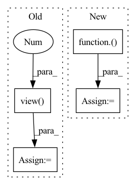

Pattern ID :15671
Before Change
d_out_fake = D(fake_images)
//誤差の計算
d_loss_real = criterion(d_out_real.view(-1),label_real)
d_loss_fake = criterion(d_out_fake.view(-1 ) ,label_fake)
d_loss = d_loss_real + d_loss_fake
//誤差を伝搬
g_optimizer.zero_grad()After Change
//誤差の計算
// d_loss_real = criterion(d_out_real.view(-1),label_real)
// d_loss_fake = criterion(d_out_fake.view(-1),label_fake)
d_loss_real = torch.nn.ReLU()( 1.0-d_out_real) .mean()
d_loss_fake = torch.nn.ReLU()(1.0+d_out_fake).mean()
d_loss = d_loss_real + d_loss_fake
//誤差を伝搬In pattern: SUPERPATTERN
Frequency: 3
Non-data size: 4
Instances Fragment ID: 53014648
Project Name: zassou65535/image_generator
Commit Name: 0d1f9d59248bbe59037827d4a2f017e6c6b20344
Time: 2020-02-06
Author: nakamura.k.bv@m.titech.ac.jp
File Name: GAN.py
M Class Name: AnonimousClass
N Class Name: AnonimousClass
M Method Name: train_model(4)
N Method Name: train_model(4)
M Parent Class:
N Parent Class:
M File Name: GAN.py
N File Name: GAN.py
M Start Line: 31
M End Line: 108
N Start Line: 83
N End Line: 111
Before Change
// assert samples.shape == (2, 500)
import matplotlib.pyplot as plt
flat = samples.view(-1 )
print(_multinomial_prob(flat, torch.ones(10)))
// plt.hist(flat.int().numpy(), 10, density=True)After Change
def test_greedy_sampler():
torch.manual_seed(123)
logits = torch.rand(2, 10, 5000)
samples = sampling.GreedySampler()( logits)
assert samples.shape == (2, 5000)
assert chi2_test(samples.view(-1), torch.ones(10) * 0.1)
logits = torch.rand(2, 10, 10000) Fragment ID: 53014651
Project Name: cheind/autoregressive
Commit Name: bd9eb01183a89771ea325551b59720b4f8ce0140
Time: 2021-11-11
Author: christoph.heindl@gmail.com
File Name: autoregressive/tests/test_sampling.py
M Class Name: AnonimousClass
N Class Name: AnonimousClass
M Method Name: test_greedy_sampler(0)
N Method Name: test_greedy_sampler(0)
M Parent Class:
N Parent Class:
M File Name: autoregressive/tests/test_sampling.py
N File Name: autoregressive/tests/test_sampling.py
M Start Line: 48
M End Line: 50
N Start Line: 34
N End Line: 46
Before Change
ir_file = os.path.join(self.ir_files_dir, ir_file)
if ir_file.endswith(".mat"):
data= io.loadmat(ir_file)
IR = torch.from_numpy(data[self.mat_dict_key]).view(-1 ) .float()
else:
IR, _ = torchaudio.load(ir_file)
IR = IR.view(-1)After Change
IR = IR[0]
if rate != self.ir_rate:
transformed = torchaudio.transforms.Resample(rate, self.ir_rate)( IR.view(1,-1))
IR = IR.view(-1)
IR = IR[:self.max_reverb_len]
Fragment ID: 53014646
Project Name: shangeth/wavencoder
Commit Name: ef13a183eda6e006e80057c8bc49676a771a098e
Time: 2021-02-25
Author: shangethrajaa@gmail.com
File Name: wavencoder/transforms/reverberation.py
M Class Name: Reverberation
N Class Name: Reverberation
M Method Name: load_IR(1)
N Method Name: load_IR(1)
M Parent Class:
N Parent Class:
M File Name: wavencoder/transforms/reverberation.py
N File Name: wavencoder/transforms/reverberation.py
M Start Line: 18
M End Line: 25
N Start Line: 19
N End Line: 27